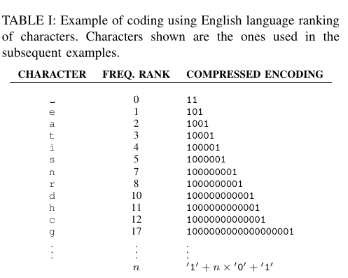
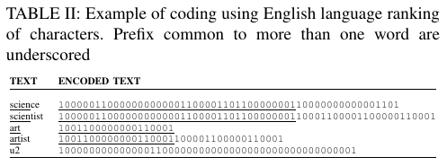
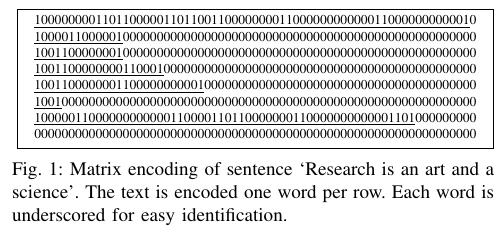
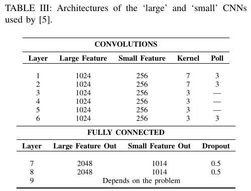
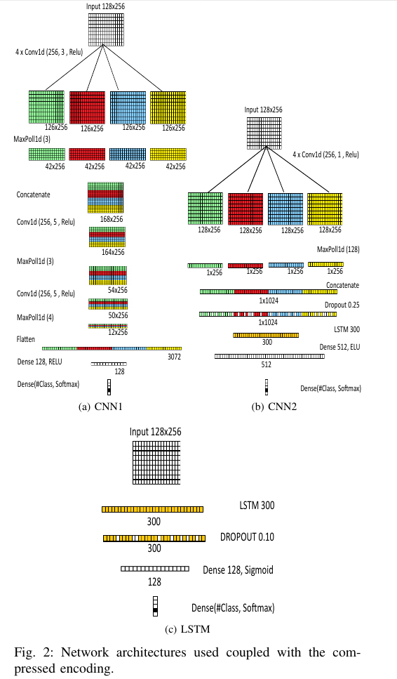
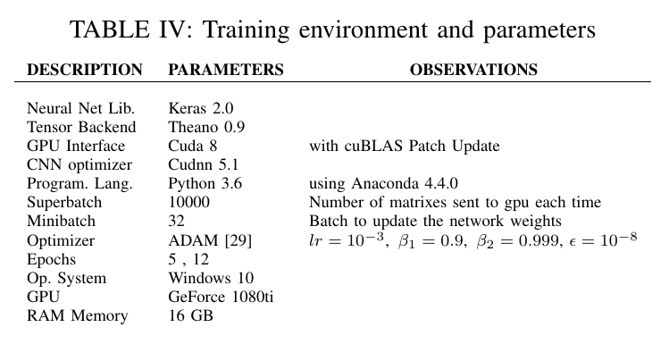
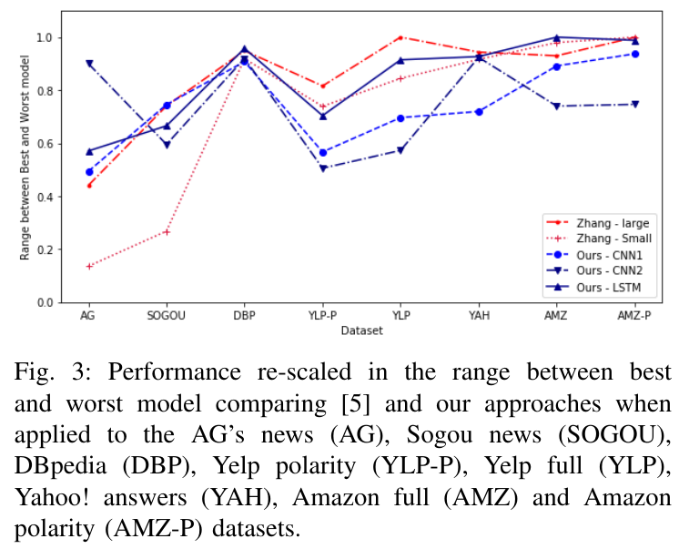
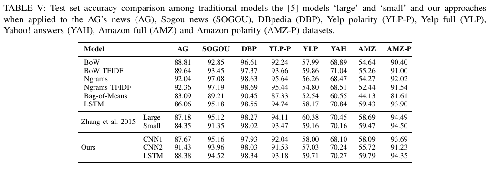
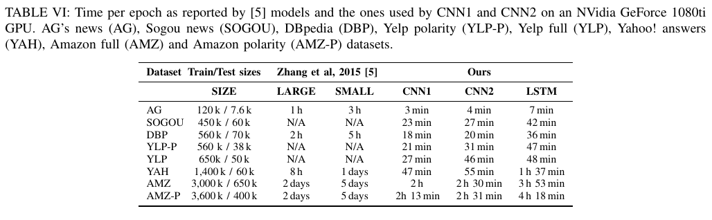

A Compact Encoding for Efficient Character-level Deep Text Classification
文献翻译：高效的紧凑编码字符级深层文本分类
authors: Wemerson Marinho, Luis Martı́, Nayat Sanchez-Pi
原文: A Compact Encoding for Efficient Character-level Deep Text Classification
Abstract
本文提出了一种新的文本到张量的表示方式，它依靠信息压缩技术为最常用的字符分配较短的编码。这种表示方式与语言无关，不需要进行预训练并能够产生没有信息损失的编码。它提供了对文本形态的充分描述，例如，它能够用来表示前缀，后缀和变形相似的向量，甚至能够表示训练集中没有的单词。通常，由于它紧凑而稀疏，因此非常适合使用张量处理库来加快训练时间。作为本文的一部分，我们证明了当与卷积神经网络（CNN）结合用于字符级别的文本分类时，该技术特别有效。我们将 CNN 的两个变体与本文的编码方式结合使用。实验结果表明，它极大地减少了要优化的参数数量，从而仅在 one-hot 编码表示所花费的时间的一小部分中就产生了具有竞争力的分类精度，从而应用于商业硬件中来训练模型。
Index Terms – text classification, character level convolutional neural networks, encoding of words
1. INTRODUCTION
文档分类是自然语言处理中要解决的主要任务之一[1]。它意味着将文档（或任何文本片段）与依赖其内容的类别或标签相关联。数字形式的文本（尤其是通过 Internet）的可用性不断提高，要求开发统计和人工智能以使该过程自动化。垃圾邮件检测器，情感分析，新闻归档等许多方面都需要高质量的文本分类器。
文档分类的方法覆盖范围很广（参见[1:1]-[2]）。它们的重要部分依赖于将词作为文本的原子元素来处理的表示形式。因此，这些方法通过统计词的出现来进行分析[3]。但是，属于一种语言的单词和结构的可变性阻碍了该方法的可行性。因此，这些模型在特定领域和应用中具有出色的性能，在这些领域和词汇中，词汇被限制为或可以限制为相对少量的单词，可能是由专家来进行挑选的。此外，这种建模对于一种语言而言是特定的，对于另一种语言将需要重新开始类似的过程[3:1]。
近年来，随着深度学习方法的出现，我们经历了机器学习的一场革命[4]。CNN 的发展[5]与并行计算库（例如 Theano[6]，Tensorflow[7], Keras[8]等）的普及相结合，简化了图形处理单元上的通用计算（GPGPU）[9]已成功解决图像分类问题[10]，迅速成为该领域的最新技术。
可以预见，深度学习和 CNN 在图像分类领域的成功促使人们将深度学习原理扩展到文档分类领域。一些现有的方法已经更新，但明显的大多数方法仍基于单词的符号化机器统计推理。词袋（BoW）[11]和 Word2vec[12] 是一些最受欢迎的策略。
可以说，在文档领域中复制图像分类的成功面临的主要挑战是将文本表示为数字张量的困难。为了解决这个问题，[3:2]提出了一种开创性的方法，将字符视为文本的原子元素。特别是，他们将文本表示为 one-hot 编码字符序列。这种编码提供了一种强大的，独立于语言的文本表示形式的矩阵，然后将其用作不同 CNN 的输入。他们的实验结果表明，这种方法能够实现并在某些情况下改善复杂文本分类问题的最新技术水平。最近，参考文献[13]通过将 CNN 与长短期记忆网络 （LSTM）结合起来改善了那些结果[14]。尽管如此，该方法的庞大计算需求阻碍了该方法的效果，因为在相对复杂的问题中，其训练可能需要花费几天的时间。
字符级别的表示形式可能比单词级别的表示形式更强大。另一方面，它们在计算上更昂贵，因为在字符级别检测语法和语义关系更昂贵[15]。一种可能的解决方案是合并字符级别信息的单词表示。
在本文中，我们提出了一种有效的单词字符级别编码以表示文本，它主要受 Tagged Huffman[16] 信息压缩技术启发。该编码考虑了文本中的字符出现频率，以便将较短的编码分配给最常用的字符。这种新颖的文本编码通过减少其在时间和内存方面的训练要求，使[3:3]提出的想法在计算上更加容易实现。
本文所提出的编码使得可以以较稀疏的形式表示文本的较大部分，而不会丢失任何信息，同时保留了对任何单词（甚至是训练数据集中不存在的单词）进行编码的能力。为了研究这种编码的影响，我们将其与两种 CNN 架构相结合。通过进行的实验研究表明，即使我们采用了较简单的硬件配置，我们也可以在较短的训练时间内实现达到与现有技术类似的性能，或者在某些情况下要比现有技术要好。
我们的主要贡献表明了，这种新颖的字符级别文本编码产生了精简的输入矩阵，从而大大了训练时间，同时在准确性方面可与原来的方法[3:4]相比产生可比或更好的结果。这为更复杂的应用，使用具有较低计算能力的设备以及探索可以与输入表示方式结合的其他方法打开了大门。
本文的其余部分的结构如下。在下一节中，我们将讨论本文所需的理论基础。然后，我们还分析了字符级别文本压缩的替代方案，这些替代方案在提出我们的方法时已经考虑了。之后，在第三部分中，我们将介绍将要参与实验的编码过程和神经网络结构。随后，在第四节中，我们复制了[3:5]中的实验，以便在可比较的条件下将我们的方法与他们的方法进行对比。最后，在第五节中，我们提供了一些最后的结论性意见并概述了我们未来的工作方向。
2. PRELIMINARIES
随着许多库[6:1],[8:1],[17]，技术和硬件的发展，在图像分类[10:1]中使用卷积神经网络（CNN）[5:1]的成功蓬勃发展。通过使用这些工具以获得更好的结果和更强大的算法的可能性证明了使用 CNN 进行文本分类任务的合理性，从而促使了在多个应用程序中使用相同的方法。
有两种使用 CNN 来处理文本信息的常用方法：(i) 词袋（BoW）[11:1]和 (ii) Word2vec[12:1]方法。
在 BoW 机器某些变体的情况下，为了表示大小为 的词汇表中的每个单词，将数字 放置在该单词在 向量中的对应位置，所有其他位置保留为数字 。由于自然语言通常具有很大的词汇量，因此必须使用词汇表的有限子集，以使其能够根据内存需求执行必要的计算。所选的词汇的子集必须代表文本。因此，在实际问题中，对此问题需要投入了大量的精力。特别是，通常需要聘请应用程序领域专家或使用某种单词频率统计或相关性度量标准，其中最常见和最稀有的单词都被排除在外。
在 word2vec 方法中，每个单词都是通过固定大小的度量嵌入来投影的，表示它在与感兴趣的文本相同的语言的大文本语料库中共现。可以使用预训练的矩阵或使用新单词重新调整表示形式。两种策略的主要问题是它不允许表示不在训练数据集中的单词。错字，拼写错误，字母和用复杂结构的语言（变形，变位等）书写的文本被完全忽略。
将字符确立为文本形成的基本单位可提供一个更好的机会，使它能够很好地应对拼写错误问题，接受新词以及其他文本形式，如等式和化学式，缩写和特质，例如互联网上的图释，方言，表情等。假设单词是基本单元，那么这种表示方式将会丧失许多本来具备的能力，尤其是在模型假设文本生成者使用正式语言的情况下。
参考文献[3:6]在这方面提出了重要的创新。它们将文本表示为字符级别序列，而不是单词。因此，它们能够将符号的词汇量减少到字母表的大小（文献中是 69），从而允许使用 one-hot 编码[18]。在该文献中，他们将文本表示为大小为 的矩阵，其中每一行对应于文本序列和列中存在或不存在给定字符的位置。因此，在给定序列中带有 的行表示在该文本位置中存在相应的字符。有了这种表示形式，他们将它应用于 CNN 并获得了与其他技术可竞争的结果，并且在某些情况下提高了现有技术的结果。但是，主要缺点是计算量大，在某些情况下每个训练 epoch 需要几天的时间。
他们获得结果表明，语言以及文本可以像其他信号一样被视为一系列信号[3:7]。但是，训练时间和要计算的矩阵的尺寸仍然是有效使用该方法的障碍。这就是为什么更好的文本编码可能是朝着实质性改善此问题的正确道路。
3. COMPRESSED ENCODING FOR CNN-BASED TEXT CLASSIFICATION
在寻找一种方法来减少训练时间，同时又保留了字符级别卷积对文本进行分类的灵活性和强大功能时，我们找到了一种更好地对文本进行编码的方法。我们的方法具有极高的准确性，可以大幅度地减少训练一 epoch 所需的时间，从数小时减少到数分钟，从数天减少到数小时。
为了获得更好的性能，起初，我们虽然对每个字符使用形式的编码，并使用[3:8]相同的方法，但是我们意识到对每个单词使用可变长编码可能会更有效。为此，我们需要一种对每个字符进行编码的方法，生成用于表示每个单词的不同的级联编码，并且具有相同前缀的单词彼此相近，尤其该编码能很好地应对单词变体。
A. Compressed Representation
尽管 Huffman[19]编码产生的编码可能最短，但是一旦我们将编码后的字符连接起来形成一个单词，它就无法生成一个唯一的表示。我们研究了[20]的编码方式，并找到了有前途的替代方案。
我们的方法基于 tagged Huffman[16:1] 编码方案，其中一对 “0” 数字是信号，而数字“1”是开始和结束编码的标签，唯一的区别是我们的方法是一种较短的版本，以减少输入矩阵的大小，因而选择仅对妹子字符使用一个数字“0”而不是两个，并以相同的方法用数字“1”标记每个字符编码的开始和结束。
与[16:2]中的方法一样，我们采用的编码具有以下优点[20:1]:
- 没有字符编码是另一个的前缀，也就是说，匹配是一对一唯一对应的。
- 允许直接搜索，即在编码文档中搜索单词，只需要对单词进行编码，然后使用传统的方法将编码后的字符在文档中进行匹配搜索。
- 这种编码方法是一种压缩技术，因此它还允许使用二进制永久保存已编码后的文本文档，从而需要较少的存储空间。
这些优势变得比较有吸引力，尤其是如果目标是提取有关存储库文件的知识，以便对相同文件在不同维度上执行各种分类，则这些优势尤其具有吸引力。
这种编码相对于使用单词作为文本的原子表示的其他策略的可能优势是，当网络像我们人类一样通过一些前缀来猜测单词的含义的时候，可以更好地响应训练数据中未见过的单词。这在那些拥有大量变体的语言，如葡萄牙语，西班牙语，意大利语，法语，俄语，阿拉伯语和土耳其语等将尤其有用。
该编码过程不限于任何大小的词汇表，唯一的问题是较低词频的字符会产生相对较长的编码，因此形成较大的矩阵表示。
B. Encoding Procedure
在我们所有的实验中，我们使用以下编码方式对单词进行编码：
- 获取每个字符的频率：读取文本数据库并计算每个字符的频率，生成一个按出现频率排序的列表。然后我们创建一个仅包含字符相对位置的排行。对于给定的语言，此排行非常稳定，因为仅使用排行的顺序。这意味着，如果所有文档都在相同的习惯用法中，则可以用具有该语言频率排行的字符的列表来替换此过程。
- 创建从字符到压缩编码的映射:为了对每个字符进行编码，我们将数字“0“的数量的表示字符的位置排行，并以两个”1“作为编码的开始和结束。Table 1是一些字符编码的例子。

要对每个单词进行编码，我们只需要将编码的字符连接起来即可。例如，Table II 提供了一些纯文本单词及其对应编码示例。

给定一个文档，我们认为它们由单词组成，即由空格字符划分的任何一组字符。这意味着”单词“可以是数学方程式，网址，LATEX代码，计算机编程指令等。在 Table II 中，我们可以看到具有相同初始坐标的向量中具有相同前缀的单词。同样可以表示像这样的俚语，:too long，: did not read 和: you too，像这样的数学表达式也是可以的。
在代表文档的的矩阵中，每一行代表一个相应编码后的单词，第一列是嵌入编码的第一个字符。未占用的列将填充”0“，较大的编码表示受选择限制。空行用”0”填充，较大的文档仅表示所选的最大单词数，忽略剩余的所有单词。例如，Figure 1 以 表示了一个文档。

在 Figure 1 的示例中，我们使用 的矩阵（520 个元素）对文本进行了一定程度松弛表示。在最少的情况下，我们将需要 （448 个元素）。相反，[3:9]方法将至少使用 （2208）个元素来表示相同的句子。
在我们的实验中，使用 256 维度足以代表来自所研究数据库之一的单词的 99.5%。在本文研究的所有数据库中，我们选择 128 作为代表文档的单词限制，以 的矩阵来表示每个文本。

- 卷积网络模型：之前说过，此项工作是由[3:10]发起的。在他们的原始方法中，他们使用拥有 69 个元素的词汇表的 one-hot 编码来对每个字符进行编码，使用字母，数字和标点符号作为非空格字符。模型由 9 层，6 个卷积层和 3 个全连接层组成。Table III 展示了它们的结构。
他们使用了随机梯度下降（SGD），其中最小批量大小为 128，动量（momentum）为0.9，且初始步长为 0.01，每隔 3 epoch 减少 10 次。因此，他们需要至少训练 30 个 epoch 才能获得结果。
C. Neural Network Architectures
为了验证本文编码方式的有效性，我们执行了 3 个实验，使用 3 个模型，CNN1，CNN2 和 LSTM：

D. CNN1 topology
首先，该网络结构通常使用 word2vec [12:2] 创建的嵌入对文本进行分类，唯一的区别是我们将输入大小减少到 256，而不是 300 个特征。我们将此结构命名为 CNN1。它是基于卷积的拼接的浅层学习方法，受[21]启发，他们在某些数据集上取得现有技术结果。
我们使用该模型训练 5 个 epoch。神经网络结构见 Figure 2a。
E. CNN2 topology
在 CNN1 取得积极成果的情况下，我们决定研究其他可能的结构。根据[22]中的建议选择参数，我们创建了另一个浅而宽的卷积网络结构，对 ag 新闻数据集上进行训练。该网络结构由以下组成：
- 卷积宽度过滤器（kernel_size）：接近最佳单个最佳区域大小的区域组合优于使用远离最佳单个区域大小的多个区域大小的组合[22:1]。我们将宽度从 1 扫描到 7，比较精度性能。在这些评估中，宽度为 1 的卷积是最好的选择。
- Pooling size: 对于句子分类任务，max pooling 始终比其他的策略表现更好[22:2]。
CNN2 的网络结构见 Figure 2b。
F. LSTM topology
为了说明应用本文编码的可能性，我们使用 LSTM[14:1]进行了实验，类似于[23]所述的 LSTM 模型，不同之处在于：我们使用本文的表示方式，而不是使用 word2vec 嵌入[12:3]。该结构非常简单，输入层为 ，其次是 LSTM 层为 300，Dropou 层的丢弃率为 [24], 一个具有 128 个单元的全连接层以及一个 softmax 层。
我们使用该模型训练 5 个 epoch。通常，该网络结构比 CNN1 慢两倍。LSTM 模型的结构见 Figure 2c。
4. EXPERIMENT STUDY
本文工作的一个重要部分是将本文的字符级别编码方案与上下文中的其他最新方法进行对比。所使用的数据库与[3:11]中引用的相同，此外有另外的相关详细描述[1:2]。对这些数据集详细分析超出了本文的研究范围，相反，我们将仅对数据的主要特点进行总结：
AG’ news: 对来自 2000 多个新闻来源的新闻进行了分类。四个类别（世界，体育，商业，科学技术）。数据集包含平均分布的 120k 个训练样本和 7.6k 个测试样本[3:12]。
Sogou’ news: 按中文分类的新闻文章。[3:13]应用 pypinyin 库结合 jieba 分词来产生拼音，即汉语的罗马音表示。主要包含物种类别（体育，金融，娱乐，汽车和技术）。该数据集包含平均分布的 450k 个训练样本和 60k 个测试样本。
DBpedia: DBpedia 众包社区中提供的 Wikipedia 文章的标题和摘要[25]，其中包含 DBpedia 2014 的十四个非重叠类别。数据集包含平均分布的 560k 个训练样本和 70k 个测试样本。
Yelp full: 2015 年 Yelp 数据集挑战赛中的情感分析。五个类别代表用户给出的星数。数据集包含平均分布的 560k 个训练样本和 38k 个测试样本。
Yelp polarity: 2015 年 Yelp 数据集挑战赛中的情感分析。原始数据被转换为极性问题。1 星和 2 星的评分表示为不良，而 4 星和 5 星的评分表示为良好。数据集包含平均分布的 560k 个训练样本和 50k 个测试样本。
Yahoo! answers: Yahoo! 上的问题和答案。包含十个类别（社会与文化，科学与数学，健康，教育，计算机与互联网，体育，商业与交融，娱乐与音乐，家庭与人际关系，政治与政府）。每个样本均包含问题标题，问题内容和最佳答案。该数据集包含平均分布的 1,400k 个训练样本和 60k 个测试样本。
Amazon full: 来自 Amazon 的 SNAP 项目的情感分析评论数据集[26]。用五个类别表示用户给出的星数。数据集包含 3,000k 个训练样本和 650k 个测试样本[3:14]。
Amazon polarity: 同样来自 Amazn 的 SNAP 项目的情感分析评论数据集[26:1]。原始数据被转换成极性问题，星数为 1和2的表示差，星数为 4 和 5的表示为良好。数据集中包含平均分布的 3,600k 个训练样本和 400k 个测试样本。[3:15]
基线比较模型与[3:16]相同，其中有大量描述，我们只是复制了他们的结果，唯一不同的是，他们使用损失误差作为基准，为了更好地理解，我们将其转换为准确性。在[3:17]中对有详细的描述。在本文中，我们仅总结主要信息：
Bag of Words(BoW) and its term-frequency inverse-document-frequency (BoW TFIDF): 对于每个数据集，他们从训练子集中选择了 50,000 个最频繁的单词。对于普通的 BoW，使用每个单词的计数作为特征，对于 TFIDF, 他们使用计数作为词频[3:18]。
Bag-of-ngrams (Ngrams) and its TFIDF (Ngrams TFIDF): 通过从每个数据集的训练子集中选择 500,000 个最常见的 n-gram (最多 5-gram) 来构建 n-grams 模型。特征值的计算方式与 BoW 模型相同[3:19]。
Bag-of-means on word embedding: 该模型对每个数据集的训练子集使用 word2vec[12:4]上的 k 均值，然后将这些学习到的均值用作聚类词的代表。考虑在训练子集中出现超过 5 次的所有单词。嵌入的维数为 300。特征的计算方式与 BoW 模型的计算方式相同。均值数为 5000[3:20]。
Long-Short Term Memory (LSTM): LSTM[14:2]模型是基于单词的，大小为 300 的预训练 word2vec[12:5] 嵌入。通过对所有 LSTM 的输出取均值来形成模型的特征向量，然后使用多项式逻辑回归。输出尺寸为 512[3:21]。
对于所有的实验，我们使用 Table IV 中列出的环境和参数配置。除了使用小写字母的编码过程外，我们不使用任何预处理策略。没有采用数据增强技术。

Table V 显示了所有结果，并与传统模型和方法[3:22]进行了比较。

由于表格数据显示不够直观，因此我们决定采用图形表示结果。特别是，从先前的结果中，我们选择了[3:23]的大型和小型结构以及 CNN1，CNN2 以及 LSTM。然后将这些精度按比例缩放到每个数据集的范围 之间，即 0 表示最差，1 表示最佳性能。在所有模型中，包含传统模型，其结果图 Figure 3 所示。在 Table VI 上，我们根据[3:24] 可获得的结果进行了运行时间上的比较。
本文的主要研究目的是评估使用我们编码方法的可能性，该方法考虑了使用字符作为基本单元的单词构造。我们的主要贡献在于，这种方法可以减少编码矩阵的维数，从而大大缩短模型训练的时间，并降低所需的计算能力要求。某些文本数据集具有词频方法（即 BoW 和 word2vec）无法解决的特点，例如变体和新词汇。[3:25]在这方面是伟大的创新，但是其训练仍然是阻碍有效使用该技术的关键因素。因此，我们提出了一种更好地表示方式。


为了做比较，我们使用 CNN1 进行训练，模型输出 4 个类别，需要优化 1,837,188 个参数。作为比较，在[3:26]建议的结构中，它需要优化的参数数量为 11,337,988。
由于我们关注的问题之一是使我们的方案在商业硬件上尽可能适用，因此我们将研究重点放在了硬件配置上。分析大多矩阵编码文本的主要瓶颈是需要大量使用 RAM。我们的方法生成 大小的矩阵，小于 [3:27]。尽管如此，其中很大一部分很快就占用了“常规”个人计算机上的可用 RAM。在我们使用的计算机上，有 16G 的可用空间，这在现代个人计算机中并不罕见。因此，在这种优化算法的实现中，使用生成器控制生成并发送到 GPU 的矩阵的数量非常重要。如果你的计算机只有 8GB 或更少的 RAM，则有必要减少批处理的大小。
结果与[3:28]的方法和传统技术相比非常有竞争力。我们甚至可以看到，按照[22:3]的建议，我们可以在 AG 新闻数据集上获得出色的性能表现。快速算法的优点之一是，如果数据集没有那么大，则可以扫描特征宽度以找到优化精度的解决方案。另一个优点是可以实现 k-折验证，以便更好地了解特定数据集在现实生活中的表现。
另一个有趣的点是，与使用[3:29]提出的使用 word2vec[12:6]进行嵌入方法相比，将 LSTM 层与本文的编码方法一起使用，我们能获得相似甚至更好的结果。我们的方法具有其自身的性质，当 word2vec 使用预训练的向量来表示大文本主体上的单词共现时，它说明了文本的形态学方面。即使在 RNN 中也能考虑字符信息，我们证明了这种表示方式并不限于 CNN 或神经网络领域。
尽管 LSTM 模型训练比 CNN1 和 CNN2 模型慢，但其性能始终优于它们。这表明单词之间的时间依赖性很重要，因此，考虑到此信息，其他结构可能会产生更好的结果，这是应该探索的方向。除此以外，通过我们的编码方式实现的降维效果使其他几种结构和方法也可以在合理的时间内得到验证。
我们相信我们的算法实现可以更快。例如，当使用 GPU Gefore 1080Ti 和 CNN1 模型时，10,000 个阵列的每个超级批处理的权重都能够在 30 秒之内更新。GPU 仅需要 6 秒钟，而对于所有矩阵进行编码到将其交付到 GPU 则花费了另外 24 秒钟。在这方面，使用多线程策略可能会有所帮助。
5. FINAL REMARKS
在本文中，我们提出了一种有效的字符级编码方案，基于 Tagged Huffman[16:3] 信息压缩方法，来对文本进行编码，并将其用作字符级 CNN 文本分类的输入预处理步骤。
我们已经证明，使用这种压缩技术是用于文本分类的深度学习卷积中表示文本的一种方便可能性。这一点尤为重要，因为在处理较少整理过的文本数据集时，使用字符级编码文本可能较重要，因为它对拼写错误，错别字，俚语，语言变体以及 Internet 文本的其他常见特征具有鲁棒性。
这种新颖的文本编码允许以紧凑的形式表示文本的较大部分，同时保留对任何单词（甚至是训练数据集中未出现过的单词）进行编码的能力。此外，由于紧凑而稀疏，此方法大大减少了训练 CNN 所需的时间，因此使用此编码方案的应用更易于访问。这为更复杂的应用，使用具有较低计算能力的设备以及探索可以与该输入表示形式结合的其他方法提供了方便。
本文使用两个 CNN 模型以及一个 LSTM 模型与本文提出的编码方法结合，进行实验，这些实验结果表明，即使采用了更简单的硬件配置，我们也可以在较短的时间内实现与[3:30]相似的性能。此外，根据我们的结果，我们证明了[3:31]的结论，该结论指出语言可以被视为一种信号，与其他语言没有任何区别。
需要注意的是，本文的主要目的是显示本文编码方法难道可行性，而不是产生更好的结果。因此，我们将精力集中在比较研究上。为此，将在自定义神经网络结构上应用我们的编码方法是可能的。我们的结果表明，将其与 LSTM 结合是克服固定矩阵限制的一个可能方向。在不久的未来，我们将专注于设计可能进一步改善结果的新网络结构。
本文研究还未使用其他信息理论的信息表示方法打开了一扇门。创建文本的数字表示。必须概述这样一个事实，即文本的这种紧凑的数字表示形式不限于 CNN 或神经网络领域。评估它们的影响作为其他分类算法的预处理步骤（稍作修改后）可能会很有趣。
REFERENCES
F. Sebastiani, “Machine learning in automated text categorization,” ACM Computing Surveys, vol. 34, no. 1, pp. 1–47, Mar. 2002. [Online]. Available: http://doi.acm.org/10.1145/505282.505283 ↩︎ ↩︎ ↩︎
R. Kosala and H. Blockeel, “Web mining research: a survey,” SIGKDD Explor. Newsl., vol. 2, no. 1, pp. 1–15, June 2000. [Online]. Available: http://dx.doi.org/10.1145/360402.360406 ↩︎
X. Zhang, J. Zhao, and Y. LeCun, “Character-level convolutional networks for text classification,” in Advances in neural information processing systems, 2015, pp. 649–657. ↩︎ ↩︎ ↩︎ ↩︎ ↩︎ ↩︎ ↩︎ ↩︎ ↩︎ ↩︎ ↩︎ ↩︎ ↩︎ ↩︎ ↩︎ ↩︎ ↩︎ ↩︎ ↩︎ ↩︎ ↩︎ ↩︎ ↩︎ ↩︎ ↩︎ ↩︎ ↩︎ ↩︎ ↩︎ ↩︎ ↩︎ ↩︎
I. Goodfellow, Y. Bengio, and A. Courville, Deep Learning. MIT Press, 2016, http://www.deeplearningbook.org. ↩︎
Y. LeCun, L. Bottou, Y. Bengio, and P. Haffner, “Gradient-based learning applied to document recognition,” in Proceedings of the IEEE, 1998, pp. 2278–2324. ↩︎ ↩︎
J. Bergstra, O. Breuleux, F. Bastien, P. Lamblin, R. Pascanu, G. Des-jardins, J. Turian, D. Warde-Farley, and Y. Bengio, “Theano: a CPU and GPU math expression compiler,” in Proceedings of the Python for Scientific Computing Conference (SciPy), Jun. 2010, oral Presentation. ↩︎ ↩︎
M. Abadi, A. Agarwal, P. Barham, E. Brevdo, Z. Chen, C. Citro, G. S. Corrado, A. Davis, J. Dean, M. Devin, S. Ghemawat, I. Goodfellow, A. Harp, G. Irving, M. Isard, Y. Jia, R. Jozefowicz, L. Kaiser, M. Kudlur, J. Levenberg, D. Mané, R. Monga, S. Moore, D. Murray, C. Olah, M. Schuster, J. Shlens, B. Steiner, I. Sutskever, K. Talwar, P. Tucker, V. Vanhoucke, V. Vasudevan, F. Viégas, O. Vinyals, P. Warden, M. Wattenberg, M. Wicke, Y. Yu, and X. Zheng, “TensorFlow: Large-scale machine learning on heterogeneous systems,” 2015, software available from tensorflow.org. [Online]. Available: https://www.tensorflow.org/ ↩︎
F. Chollet et al., “Keras,” https://github.com/fchollet/keras, 2015. ↩︎ ↩︎
S. Mittal and J. S. Vetter, “A survey of CPU-GPU heterogeneous computing techniques,” ACM Computing Surveys, vol. 47, no. 4, pp. 69:1–69:35, Jul. 2015. [Online]. Available: http://doi.acm.org/10.1145/2788396 ↩︎
A. Krizhevsky, I. Sutskever, and G. E. Hinton, “Imagenet classification with deep convolutional neural networks,” in Advances in Neural Information Processing Systems (NIPS), 2012, pp. 1097–1105. ↩︎ ↩︎
G. Salton and M. McGill, Introduction to Modern Information Retrieval. New York, NY, USA: McGraw-Hill, 1983. ↩︎ ↩︎
T. Mikolov, I. Sutskever, K. Chen, G. S. Corrado, and J. Dean, “Distributed representations of words and phrases and their compositionality,” in Advances in Neural Information Processing Systems (NIPS), 2013, pp. 3111–3119. ↩︎ ↩︎ ↩︎ ↩︎ ↩︎ ↩︎ ↩︎
Y. Xiao and K. Cho, “Efficient character-level document classification by combining convolution and recurrent layers,” CoRR, vol. abs/1602.00367, 2016. [Online]. Available: http://arxiv.org/abs/1602.00367 ↩︎
S. Hochreiter and J. Schmidhuber, “Long short-term memory,” Neural computation, vol. 9, no. 8, pp. 1735–1780, 1997. ↩︎ ↩︎ ↩︎
P. Blunsom, K. Cho, C. Dyer, and H. Schütze, “From characters to understanding natural language (C2NLU): Robust end-to-end deep learning for NLP (Dagstuhl Seminar 17042),” Dagstuhl Reports, vol. 7, no. 1, pp. 129–157, 2017. [Online]. Available: http://drops.dagstuhl.de/opus/volltexte/2017/7248 ↩︎
E. Silva de Moura, G. Navarro, N. Ziviani, and R. Baeza-Yates, “Fast and flexible word searching on compressed text,” ACM Trans. Inf. Syst., vol. 18, no. 2, pp. 113–139, Apr. 2000. [Online]. Available: http://doi.acm.org/10.1145/348751.348754 ↩︎ ↩︎ ↩︎ ↩︎
S. Chetlur, C. Woolley, P. Vandermersch, J. Cohen, J. Tran, B. Catanzaro, and E. Shelhamer, “cudnn: Efficient primitives for deep learning,” CoRR, vol. abs/1410.0759, 2014. [Online]. Available: http://arxiv.org/abs/1410.0759 ↩︎
D. Harris and S. Harris, Digital design and computer architecture, 2nd ed. San Francisco, CA, USA: Morgan Kaufmann, 2012. ↩︎
C. C. Aggarwal and C. X. Zhai, “A survey of text classification algorithms,” in Mining Text Data, C. C. Aggarwal and C. X. Zhai, Eds. Springer US, 2012, pp. 163–222. [Online]. Available: http://dx.doi.org/10.1007/978-1-4614-3223-4 6 ↩︎
N. Brisaboa, E. Iglesias, G. Navarro, and J. Paramá, “An efficient compression code for text databases,” Advances in Information Retrieval, pp. 78–78, 2003. ↩︎ ↩︎
Y. Kim, “Convolutional neural networks for sentence classification,” CoRR, vol. abs/1408.5882, 2014. [Online]. Available: http://arxiv.org/abs/1408.5882 ↩︎
Y. Zhang and B. C. Wallace, “A sensitivity analysis of (and practitioners’ guide to) convolutional neural networks for sentence classification,” CoRR, vol. abs/1510.03820, 2015. [Online]. Available: http://arxiv.org/abs/1510.03820 ↩︎ ↩︎ ↩︎ ↩︎
X. Zhang and Y. LeCun, “Text understanding from scratch,” arXiv preprint arXiv:1502.01710, 2015. ↩︎
N. Srivastava, G. Hinton, A. Krizhevsky, I. Sutskever, and R. Salakhutdinov, “Dropout: A simple way to prevent neural networks from overfitting,” Journal of Machine Learning Research, vol. 15, pp. 1929–1958, 2014. [Online]. Available: http://jmlr.org/papers/v15/srivastava14a.html ↩︎
J. Lehmann, R. Isele, M. Jakob, A. Jentzsch, D. Kontokostas, P. N. Mendes, S. Hellmann, M. Morsey, P. van Kleef, S. Auer, and C. Bizer, “DBpedia - a large-scale, multilingual knowledge base extracted from wikipedia,” Semantic Web Journal, vol. 6, no. 2, pp. 167–195, 2015. [Online]. Available: http://jens-lehmann.org/files/2015/swj dbpedia.pdf ↩︎
J. McAuley and J. Leskovec, “Hidden factors and hidden topics: Understanding rating dimensions with review text,” in Proceedings of the 7th ACM Conference on Recommender Systems, ser. RecSys ’13. New York, NY, USA: ACM, 2013, pp. 165–172. [Online]. Available:http://doi.acm.org/10.1145/2507157.2507163 ↩︎ ↩︎